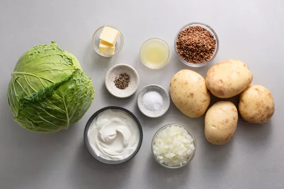
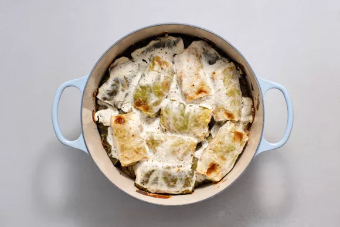

Ingredients:
- 1 head cabbage (about 4 pounds)
- 4 large potatoes, peeled and finely grated
- 2 tablespoons lemon juice
- 1 small onion, chopped
- 2 tablespoons unsalted butter
- 1 1/2 cups sour cream, divided
- 1/2 cup buckwheat, rinsed twice with boiling water and drained
- Salt, to taste
- Freshly ground black pepper, to taste

Cooking Holubci
-
Gather the ingredients.
-
Preheat oven to 350 F. Bring a big pot of salted water to a boil.
-
Remove core from cabbage and place in pot. Cover and cook for 10 minutes,
or until softened enough to pull off individual leaves.
-
Carefully remove cabbage head from water and allow it to cool until it's easy to handle.
Use a paring knife to cut away thick center stem from each leaf, without cutting all the way through.
You will need about 18 stemless leaves.
-
Finely chop remaining cabbage and place it at the bottom of a casserole dish or Dutch oven.
-
Drain potatoes in a sieve or cheesecloth, twisting or pressing to remove as much moisture as possible.
-
Transfer to a large bowl and mix in lemon juice so they don't turn brown. Set aside.
-
In a small skillet, sauté chopped onion in butter until tender.
-
Add onion mixture to the potatoes, combining well.
-
Add 1/2 cup of sour cream and rinsed and drained buckwheat to potato mixture, combining thoroughly.
Season to taste with salt and pepper.
-
Place about 1/2 cup of filling on each cabbage leaf.
Roll once away from you to encase filling.
-
Flip right side of leaf to the middle, then flip left side.
You will have something that looks like an envelope. Keep rolling again until you have a neat little roll.
-
Place cabbage rolls on top of chopped cabbage in casserole dish or Dutch oven,
seasoning each layer with salt and pepper.
-
Pour remaining 1 cup of sour cream over holubtsi, cover,
and place in oven. Bake for 1 to 1 1/2 hours or until the buckwheat filling is tender.